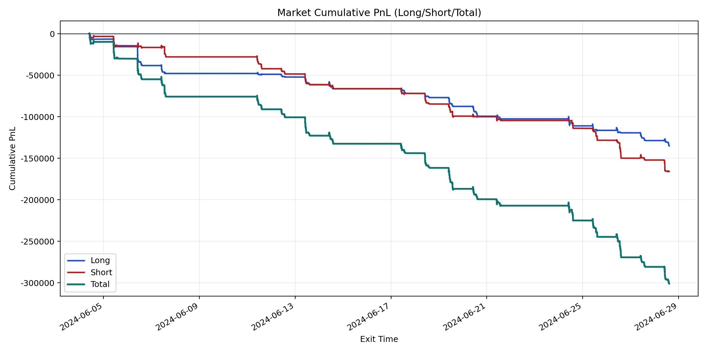
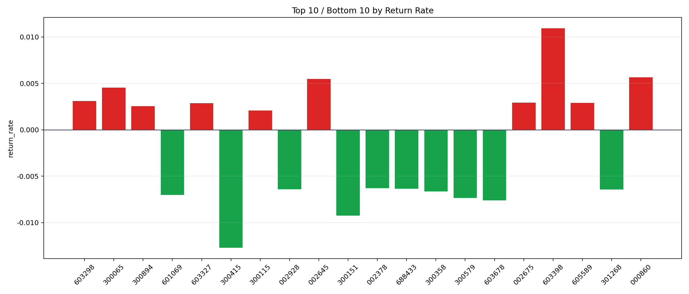

| repo_root | /home/haoranyou/data/output/dynamic_AUM_TAKER_index1000 |
|---|---|
| period_months | 1 |
| period_label | 2024-06-04_to_2024-06-28 |
| start_time | 2024-06-04 09:47:32 |
| end_time | 2024-06-28 14:41:52 |
| n_trades | 9627 |
| n_symbols | 276 |
| total_pnl | -300833.89855000045 |
| long_total_pnl | -135031.9246999988 |
| short_total_pnl | -165801.9738500016 |
| total_entry_notional | 171074943.0 |
| long_entry_notional | 88129869.0 |
| short_entry_notional | 82945074.0 |
| total_return_rate | -0.0017584918824143665 |
| long_return_rate | -0.0015321925044504356 |
| short_return_rate | -0.0019989369573653235 |
| top_symbols_by_return | ["603398", "000860", "002645", "300065", "603298", "002675", "605589", "603327", "300894", "300115"] |
| bottom_symbols_by_return | ["300415", "300151", "603678", "300579", "601069", "300358", "301268", "002928", "688433", "002378"] |

